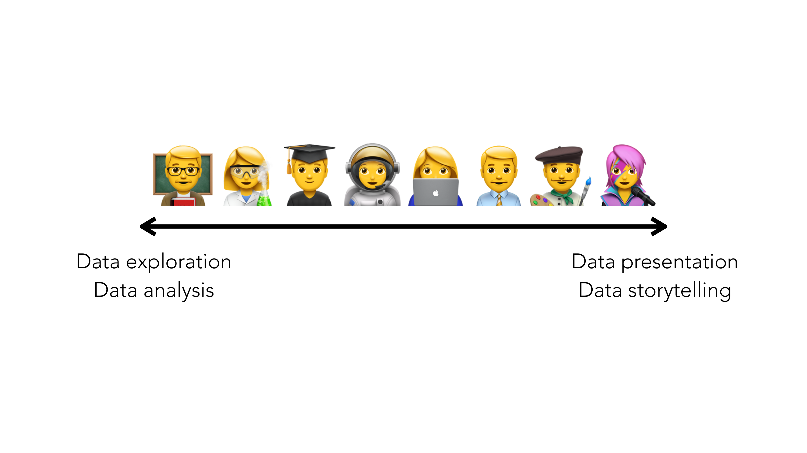
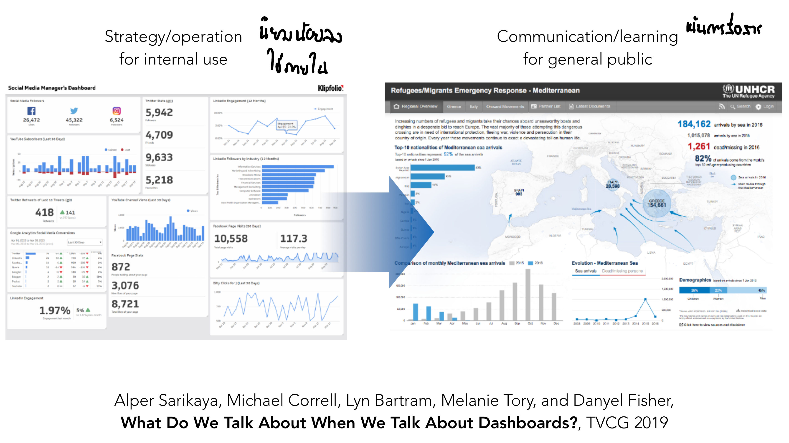
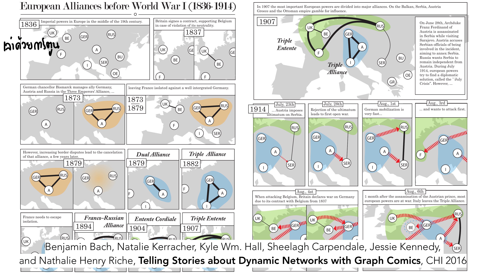
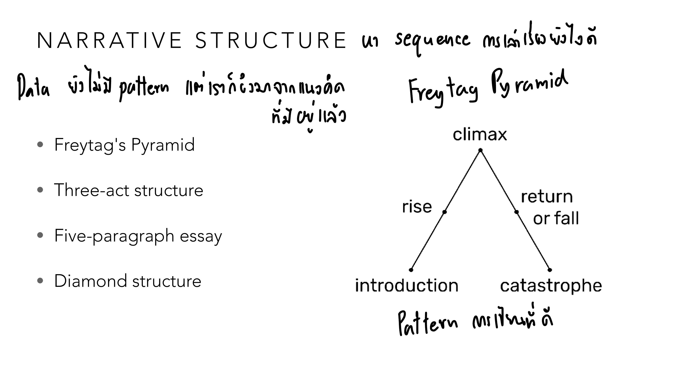
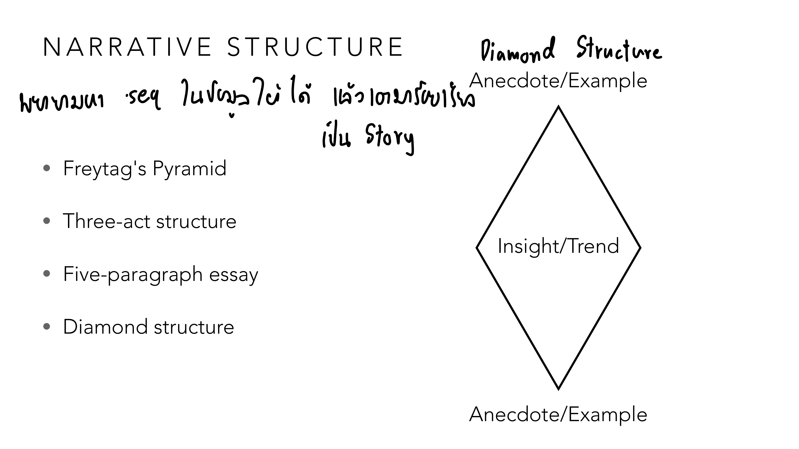
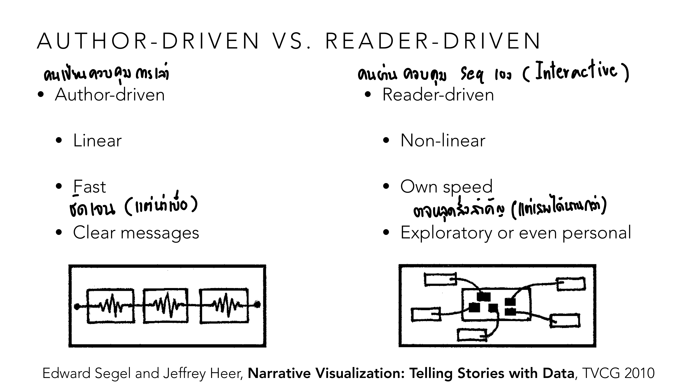
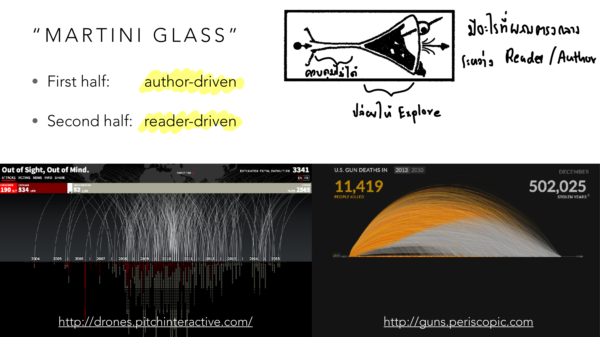
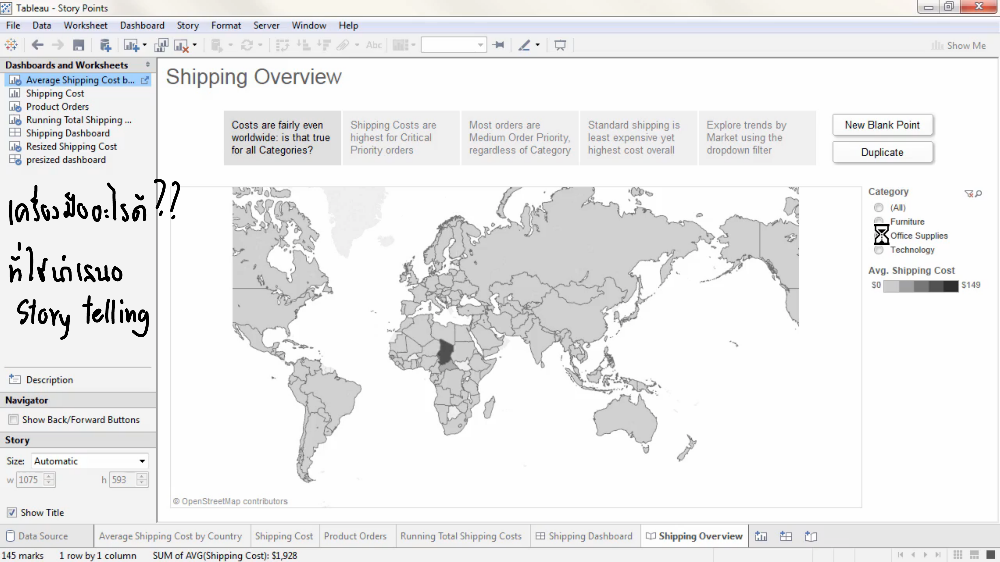
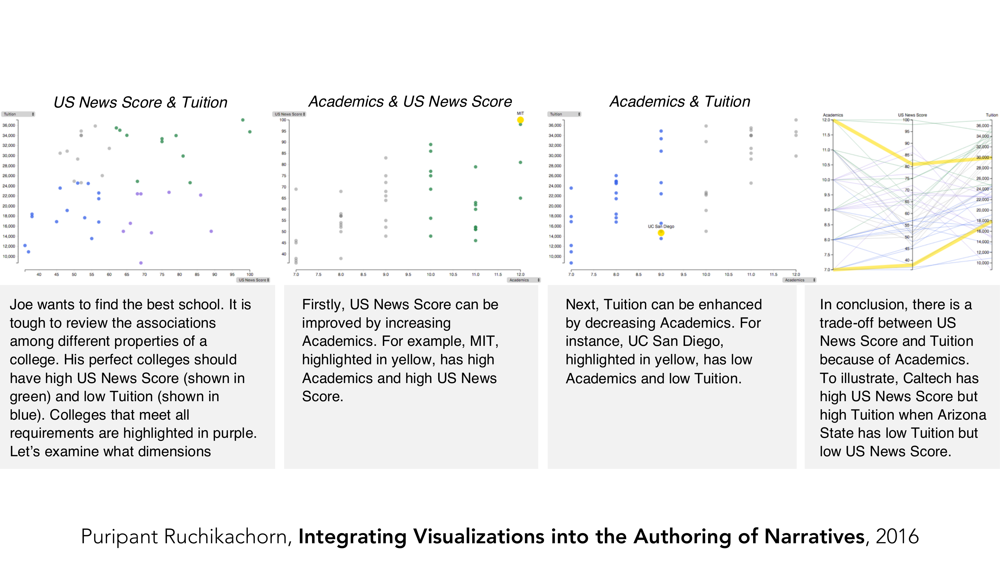
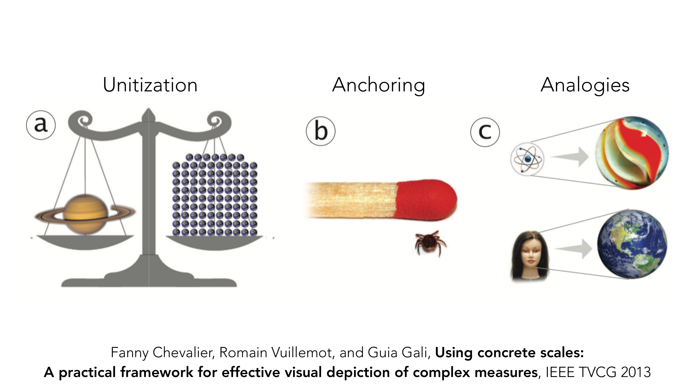

vis-12-storytelling.pdf
ตลอด 11 บทที่ผ่านมา เราสร้าง visualization เพื่อ "หา" insight (exploration/analysis) แต่พอเจอ insight แล้ว จะ "เล่า" มันให้คนอื่นเข้าใจอย่างไร? บทสุดท้ายก่อน Storytelling นี้ (ก่อนถึง etc-lecture) สอนว่าการนำเสนอข้อมูลก็มีหลักการยืมมาจากศาสตร์การเล่าเรื่อง (narrative) ได้ — และมีตัวอย่างจริงจากสื่อระดับโลกให้เห็นภาพตลอดทาง.
ก่อนเข้าเทคนิค อาจารย์ตั้งภาพให้เห็นก่อนว่า "การทำงานกับข้อมูล" มีสองขั้วที่ต้องการทักษะคนละแบบโดยสิ้นเชิง:

ฝั่งซ้ายคือบทบาทนักวิทยาศาสตร์/นักวิจัย — งานคือค้นหาสิ่งที่ยังไม่รู้ ต้องสงสัย ตั้งสมมติฐาน ทดสอบซ้ำ ฝั่งขวาคือบทบาทศิลปิน/นักแสดง — งานคือสื่อสารสิ่งที่รู้แล้วให้คนอื่นเข้าใจและรู้สึกร่วม ทั้งสองฝั่งใช้ visualization เหมือนกัน แต่เป้าหมายตรงข้ามกัน: ฝั่งซ้ายอยากให้ผู้ดู "สงสัยเพิ่ม" (raise questions) ฝั่งขวาอยากให้ผู้ดู "เข้าใจชัดเจน" (deliver a message) — 11 บทที่ผ่านมาส่วนใหญ่อยู่ฝั่งซ้าย บทนี้คือการเรียนรู้ที่จะสวมบทบาทฝั่งขวา.
บทบาทสองขั้วนี้เห็นชัดที่สุดในโลกของ dashboard เอง — dashboard ที่ทำเพื่อวัตถุประสงค์ต่างกัน หน้าตาต่างกันโดยสิ้นเชิง:

Dashboard ซ้าย (Social Media Manager's Dashboard) ออกแบบมาเพื่อใช้งานภายใน — อัดตัวเลขดิบทุกอย่างที่มี (followers, engagement, retweets) ลงหน้าจอเดียว ไม่มีเรื่องเล่า เพราะคนดูรู้บริบทอยู่แล้วและต้องการแค่ตรวจสอบตัวเลขเร็ว ๆ Dashboard ขวา (UNHCR Refugees Emergency Response) ออกแบบมาเพื่อสื่อสารสู่สาธารณะ — มีตัวเลขเด่นถูกเลือกมาเน้นแค่ไม่กี่ตัว (184,162 arrivals by sea in 2016, 1,261 dead/missing) พร้อมประโยคอธิบายบริบทกำกับ ("Increasing numbers of refugees and migrants take their chances aboard unseaworthy boats...") — ตัวเลขเดียวกันถ้าใส่ลงตารางดิบแบบซ้าย จะไม่มีน้ำหนักทางอารมณ์เท่าการเลือกเน้นและใส่บริบทแบบขวาเลย นี่คือหลักฐานว่า "storytelling" ไม่ใช่แค่การตกแต่งให้สวย แต่คือการเลือกว่าจะโชว์อะไรและใส่บริบทแบบไหน.
วิธีหนึ่งที่ชัดเจนที่สุดในการยืมโครงสร้างการเล่าเรื่องมาใช้กับข้อมูลคือ "data comics" — เล่าข้อมูลเป็นช่อง ๆ แบบการ์ตูน:

แต่ละช่องคือ network diagram เดียวกัน (ประเทศเป็นโหนด พันธมิตรเป็นเส้นเชื่อม) แต่ถ่ายภาพ ณ ปีที่ต่างกัน: เริ่มที่ 1836 (ยังไม่มีพันธมิตรชัดเจน) ไปจนถึงปี 1914 ที่แบ่งเป็น Triple Entente (UK-France-Russia) กับ Triple Alliance (Germany-Austria-Italy) อย่างชัดเจน — จุดเด่นสุดคือช่วงท้าย (23 กรกฎาคม ถึง 6 สิงหาคม 1914) ที่แบ่งเป็นช่องย่อยรายวันแสดงเส้นสีแดงกระพริบ (declaration of war) ไล่จากออสเตรียประกาศคำขาดใส่เซอร์เบีย จนลามเป็นสงครามทั่วยุโรปภายในไม่กี่วัน — การ์ตูนช่องแบบนี้ทำสิ่งที่ static network diagram เดียวทำไม่ได้เลย: แสดง "การเปลี่ยนแปลงตามเวลา" (dynamic network) พร้อมคำบรรยายกำกับเหตุการณ์ในแต่ละช่วง ผู้อ่านตามลำดับเหตุการณ์ได้เหมือนอ่านการ์ตูนประวัติศาสตร์ ไม่ใช่วิเคราะห์กราฟนามธรรม.
ข้อมูลไม่มี "จุดไคลแม็กซ์" ของตัวเองอยู่แล้วโดยธรรมชาติ แต่เรายืมโครงสร้างการเล่าเรื่องที่มีอยู่ในวรรณกรรม/ภาพยนตร์มาจัดลำดับการนำเสนอได้:

Freytag's Pyramid มาจากละครเวทีคลาสสิก: introduction (ปูพื้นสถานการณ์) → rise (ความตึงเครียดค่อย ๆ เพิ่ม) → climax (จุดสูงสุด) → return/fall (คลี่คลาย) → catastrophe (จบเรื่อง) — โน้ตกำกับข้างสไลด์บอกตรง ๆ ว่า "Data บ่งบอก pattern ไม่ได้ แต่เรายืมมาจากแนวคิดที่มีอยู่แล้ว" หมายความว่า เมื่อนำเสนอข้อมูล เราสามารถจงใจจัดลำดับให้ตัวเลขที่ "น่าตื่นเต้นที่สุด" มาอยู่ตรงกลาง/ท้ายเรื่อง (เหมือน climax) แทนที่จะโยนตัวเลขทั้งหมดออกมาพร้อมกันตั้งแต่ต้น — การจัดลำดับแบบนี้ไม่ได้เปลี่ยนข้อมูลเลยสักตัว เปลี่ยนแค่ "ลำดับการเปิดเผย" เท่านั้น.
อีกโครงสร้างหนึ่งที่ใช้บ่อยในวารสารศาสตร์ข้อมูล (data journalism) คือ Diamond Structure — เริ่มและจบด้วยตัวอย่างที่จับต้องได้ (concrete) แต่ตรงกลางขยายไปเป็นภาพกว้าง (abstract):

โครงสร้างนี้เริ่มด้วย Anecdote/Example — เรื่องราวเฉพาะเจาะจงของคนคนเดียว/เหตุการณ์เดียวที่จับต้องได้ (เช่น "ครอบครัวหนึ่งในจังหวัด X ต้องย้ายบ้านเพราะน้ำท่วม") จากนั้นขยายกว้างขึ้นไปสู่ Insight/Trend ตรงกลาง — สถิติภาพรวมที่แสดงว่าเรื่องราวนั้นไม่ใช่กรณีเดียว แต่เป็นแนวโน้มระดับประเทศ (เช่น กราฟแสดงจำนวนผู้อพยพจากน้ำท่วมทั่วประเทศเพิ่มขึ้นทุกปี) แล้วปิดท้ายด้วย Anecdote/Example อีกครั้ง — วนกลับมาที่เรื่องราวเฉพาะเจาะจงเพื่อให้ผู้อ่านรู้สึกเชื่อมโยงทางอารมณ์อีกครั้งก่อนจบ รูปทรงเพชร (แคบ-กว้าง-แคบ) สะท้อนตรง ๆ ว่าการเล่าเรื่องด้วยข้อมูลที่ดี มักไม่ได้เริ่มด้วยสถิติแห้ง ๆ แต่เริ่มด้วยเรื่องคนคนเดียวก่อนค่อยขยายภาพ.
อีกมิติสำคัญคือ "ใครเป็นคนกำหนดว่าจะดูอะไรก่อนหลัง" — ผู้เขียน หรือ ผู้อ่าน:

Author-driven คือผู้เขียนกำหนดลำดับตายตัว (linear) เหมือนไดอะแกรมซ้ายที่เป็นเส้นตรงไม่มีทางแยก — ข้อดีคือเร็วและข้อความชัดเจน (ผู้เขียนควบคุมได้ว่าผู้อ่านจะเห็นอะไรก่อน-หลัง) ข้อเสียคือน่าเบื่อได้ถ้าผู้อ่านอยากสำรวจเอง Reader-driven คือผู้อ่านเลือกเส้นทางเอง (non-linear/interactive) เหมือนไดอะแกรมขวาที่เป็นโครงข่ายแตกกิ่งก้าน — ข้อดีคือผู้อ่านสำรวจตามความสนใจของตัวเองได้ (exploratory หรือแม้แต่ personal) ข้อเสียคืออาจพลาดประเด็นสำคัญที่ผู้เขียนตั้งใจสื่อ เพราะไม่มีใครบังคับลำดับ.
ในทางปฏิบัติ นักออกแบบมักไม่เลือกสุดขั้วใดขั้วหนึ่ง แต่ผสมทั้งสองแบบเข้าด้วยกันในชิ้นเดียว — โครงสร้างยอดนิยมที่สุดคือ "Martini Glass":

รูปทรงแก้วมาร์ตินี่: ก้านแก้วที่แคบและตรง (ครึ่งแรก) คือช่วงauthor-driven — ผู้เขียนบังคับให้ผู้อ่านเดินตามลำดับที่กำหนดไว้ก่อน เพื่อปูพื้นบริบทและข้อความหลักให้ครบ จากนั้นเมื่อแก้วบานออกเป็นปากกว้าง (ครึ่งหลัง) คือช่วงreader-driven — เปิดให้ผู้อ่านสำรวจข้อมูลเองอย่างอิสระ (โน้ตกำกับว่าช่วงก้านแก้ว "ควบคุมไม่ได้" ต้องเดินตามทาง ส่วนช่วงปากแก้ว "เปิดให้ explore") ตัวอย่างจริงสองชิ้นด้านล่าง — drones.pitchinteractive.com ("Out of Sight, Out of Mind" แสดงยอดผู้เสียชีวิตจากโดรน 3,341 คน) และ guns.periscopic.com ("US Gun Deaths" แสดงยอดผู้เสียชีวิต 11,419 คน คิดเป็น "502,025 stolen years" ปีชีวิตที่ถูกพรากไป) — ทั้งสองชิ้นเปิดด้วยตัวเลขรวมและภาพรวมที่ผู้เขียนกำหนด (ก้านแก้ว) ก่อนปล่อยให้ผู้อ่านคลิกสำรวจเคสรายบุคคลเอง (ปากแก้ว).
ในทางปฏิบัติ เครื่องมือ visualization หลายตัวมีฟีเจอร์สร้าง narrative แบบ author-driven ในตัวอยู่แล้ว ตัวอย่างที่เห็นชัดสุดคือ "Story Points" ของ Tableau:

แต่ละแท็บด้านบน (เช่น "Costs are fairly even worldwide: is that true for all Categories?" "Shipping Costs are highest for Critical Priority orders") คือ "จุดหนึ่งของเรื่อง" (story point) — แต่ละจุดผูกกับ view/filter ของ dashboard ที่ต่างกัน เมื่อผู้อ่านกดถัดไปทีละแท็บ ก็เหมือนพลิกอ่านสไลด์ที่ผู้เขียนจัดลำดับไว้แล้ว (author-driven, linear) นี่คือหนึ่งในเครื่องมือ "many vis, many step, linear" — ต่างจาก Ellipsis ที่เป็น non-linear (ผู้อ่านเลือกลำดับได้เอง) หรือ GED Vis ที่มีแค่ one dataset one vis เท่านั้น เลือกเครื่องมือผิดประเภทจะทำให้ narrative ที่ตั้งใจออกแบบไว้ (เช่น Martini Glass) สร้างไม่ได้เลย.
อาจารย์นำเสนองานวิจัยของตัวเองที่ผสาน visualization เข้ากับข้อความบรรยายอัตโนมัติ (auto-generated text) เพื่อเล่าเรื่องจากข้อมูลตารางเดียวกัน:

เรื่องราวเริ่มจาก "Joe อยากหาโรงเรียนที่ดีที่สุด — ต้องการ US News Score สูง (สีเขียว) และ Tuition ต่ำ (สีน้ำเงิน)" จากนั้นระบบไล่แสดงคู่มิติทีละคู่พร้อมข้อความอธิบายที่สร้างขึ้นอัตโนมัติจากข้อมูลจริง: คู่แรก (Academics × US News Score) ชี้ไปที่ MIT ที่มี Academics สูงและ US News Score สูงพร้อมกัน คู่ที่สอง (Academics × Tuition) ชี้ไปที่ UC San Diego ที่มี Academics ต่ำและ Tuition ต่ำพร้อมกัน แผงสุดท้ายเป็น parallel coordinates สรุปว่า Academics กับ Tuition มีความสัมพันธ์แบบ trade-off โดยยกตัวอย่างสุดโต่งสองกรณี — Caltech (US News Score สูงแต่ Tuition ก็สูงตาม) กับ Arizona State (Tuition ต่ำแต่ US News Score ก็ต่ำตาม) — ข้อคิดสำคัญ: ข้อความอธิบายในแต่ละช่องไม่ได้เขียนด้วยมือ แต่ระบบสร้างขึ้นเองจากการวิเคราะห์ pattern ในข้อมูลจริง (ใครมีค่าสูง/ต่ำตรงไหน) แล้วเลือกชื่อโรงเรียนที่เป็นตัวอย่างเด่นที่สุดของแต่ละ pattern มาอ้างถึง — นี่คือ Diamond/Freytag Structure ที่ถูกนำมาใช้งานจริงโดยอัตโนมัติ: เริ่มจากปัญหา (ภาพรวม) ไล่แจกแจงทีละมิติ (รายละเอียด) แล้วสรุปเป็น insight ปิดท้าย.
ปัญหาสุดท้ายของการเล่าเรื่องด้วยข้อมูลคือตัวเลขบางตัวใหญ่/เล็กเกินกว่าจะจินตนาการได้ (เช่น "มวลดาวเสาร์ 5.68×10²⁶ กก.") งานวิจัยนี้เสนอ 3 เทคนิคทำให้ตัวเลขนามธรรมกลายเป็นสิ่งที่จับต้องได้:

Unitization (a): แทนที่จะบอกว่า "ดาวเสาร์หนักกว่าโลก 95 เท่า" ให้วาดตาชั่งที่ด้านหนึ่งมีดาวเสาร์ อีกด้านมีลูกโลกเล็ก ๆ เรียงกันเป็นตารางจนตาชั่งสมดุล — ผู้ดูนับเม็ดคร่าว ๆ ก็เข้าใจสัดส่วนได้ทันทีโดยไม่ต้องคิดเลข Anchoring (b): แทนที่จะบอกขนาดเห็บเป็นหน่วยมิลลิเมตร ให้วางเห็บไว้ข้าง ๆ หัวไม้ขีดไฟที่ทุกคนคุ้นเคยขนาดอยู่แล้ว — สมองมนุษย์เทียบขนาดสองวัตถุที่เห็นพร้อมกันได้แม่นกว่าแปลงหน่วยตัวเลขในหัว Analogies (c): เทียบโครงสร้างที่ไม่คุ้นเคยกับโครงสร้างที่คุ้นเคยกว่า เช่น โครงสร้างอะตอม (อิเล็กตรอนโคจรรอบนิวเคลียส) เทียบกับดาวเคราะห์ที่มีแถบโคจร หรือขนาดศีรษะคนเทียบกับขนาดโลก — ทั้ง 3 เทคนิคมีแก่นเดียวกัน: แปลงตัวเลขที่ "รู้แต่ไม่รู้สึก" ให้กลายเป็นภาพที่ "เห็นแล้วรู้สึกได้ทันที".
ไล่ทุกหน้าของ vis-12-storytelling.pdf — หน้าที่มี ✓ ถูกอธิบายและ/หรือใส่รูปในเนื้อหาข้างบนแล้ว ที่เหลือเป็นตัวอย่างประกอบ/ลิงก์สื่อจริงที่เปิดสาธิตสด/งานวิจัยเชิงลึก (etc).
| หน้า | เนื้อหา | สถานะ |
|---|---|---|
| 1–2 | ปก + ตารางเรียนทั้งเทอม | etc — บริบทวิชา |
| 3–7 | ทวนจาก Lesson 11: chart type preference, memorability, artery diagnosis | etc — ทวนเนื้อหา Lesson 11 ไม่ทำ quiz ซ้ำ |
| 8 | Spectrum: Data exploration/analysis → Data presentation/storytelling | ✓ หัวข้อ 1 (มีรูป) |
| 9–11 | "Given a picture/visualization, people make a (data) story" | ✓ ส่วนหนึ่งของหัวข้อ 1 (เกริ่นนำแนวคิด) |
| 12 | ตัวอย่าง Instagram post | etc — ตัวอย่างประกอบสั้น |
| 13–14 | Dashboard types: Strategy/operation vs Communication/learning | ✓ หัวข้อ 2 (มีรูป) |
| 15–16 | บทความ/เว็บอ้างอิงเรื่อง data storytelling trend | etc — ลิงก์อ้างอิงสั้น |
| 17–49 | ตัวอย่างสื่อจริงจำนวนมาก (NYT Upshot หลายชิ้น: rich-poor friendships, overdose deaths, election turnout, Oscars history, Facebook IPO) เปิดสาธิตสดในคาบ | etc — ตัวอย่างสาธิตสดจากลิงก์จริง ไม่มีเนื้อหาให้ render เป็นภาพนิ่งที่มีความหมายนอกบริบทเว็บ |
| 50–51 | Data Comics: European Alliances before WWI + งานวิจัย Data Comics เพิ่มเติม | ✓ หัวข้อ 3 (มีรูป) |
| 52–53 | Segel & Heer citation ซ้ำ + ภาพ WWI comics ซ้ำ | ✓ อ้างอิงซ้ำจากหัวข้อ 3 |
| 54 | Narrative Structure: Freytag's Pyramid | ✓ หัวข้อ 4 (มีรูป) |
| 55 | Narrative Structure: Diamond Structure | ✓ หัวข้อ 4 (มีรูป) |
| 56–57 | PROP/SAMPLE: การจัดลำดับการเปิดเผยแถวข้อมูลตามหลัก narrative sequence | etc — แนวคิดเสริมเรื่องลำดับ ครอบคลุมแล้วโดย Freytag/Diamond |
| 58–88 | ตัวอย่างสื่อจริงจำนวนมาก (Straits Times hawker prices, NYT Uvalde shootings, infrastructure breakdown, boonmeelab lottery/BKK viz ของคนไทย, India pollution, manga/food review sites) | etc — ตัวอย่างสาธิตสดจากลิงก์จริง |
| 89 | Good News or Bad News First: Bias from Visualization Sequences (งานวิจัยอาจารย์) | etc — เชื่อมกับหัวข้อ 4 (ลำดับมีผลต่อการรับรู้) ไม่ลง quiz แยก |
| 90 | Author-driven vs Reader-driven | ✓ หัวข้อ 5 (มีรูป) |
| 91–93 | ตัวอย่าง Reader-driven จริง (NYT paths to White House, electoral college) | ✓ ส่วนหนึ่งของหัวข้อ 5 |
| 94 | Martini Glass Structure + ตัวอย่างจริง (drones, guns) | ✓ หัวข้อ 5 (มีรูป) |
| 95–117 | ตัวอย่างสื่อจริงจำนวนมาก (boonmeelab 7days, FiveThirtyEight gun deaths, The Pudding travel/wine, Morgenpost climate, NYT election precinct maps) | etc — ตัวอย่างสาธิตสดจากลิงก์จริง |
| 118 | Tools: GED Vis / Story Points / Ellipsis / DIY + ตัวอย่าง Tableau Story Points | ✓ หัวข้อ 6 (มีรูป) |
| 119–124 | เครื่องมือ/งานวิจัยเสริม (lapis-story, inflect, SoccerStories, DataToon) | etc — ตัวอย่างเครื่องมือเสริม นอกขอบเขต quiz หลัก |
| 125–127 | Integrating Visualizations into the Authoring of Narratives (งานวิจัยอาจารย์) | ✓ หัวข้อ 7 (มีรูป) |
| 128–133 | เครื่องมือ AI/LLM ช่วยสร้าง narrative อัตโนมัติเพิ่มเติม (AutoClips, Roslingifier, DataTales, TaleBrush) + xkcd comic | etc — แนวโน้มเครื่องมือใหม่ นอกขอบเขต quiz หลัก |
| 134 | The Science of Visual Data Communication (บทความสรุปงานวิจัยกว้าง) | etc — บทความอ้างอิงกว้าง |
| 135–141 | ตัวอย่างสื่อจริงเพิ่มเติม (Bloomberg/NYT China exports, US travel decline) + เกริ่นนำ Contextualization | etc — ตัวอย่างสาธิตสด + เกริ่นนำหัวข้อ 8 |
| 142 | Concrete Scales: Unitization/Anchoring/Analogies | ✓ หัวข้อ 8 (มีรูป) |
| 143–171 | ตัวอย่างสื่อจริงจำนวนมากที่ใช้ concrete scale/analogy (Ukraine size, Gaza comparison, ProPublica taxes, moon explainer, plastic pollution, Uber Bangkok, Apple trillion market cap, leaders' height, VR data visceralization) | etc — ตัวอย่างสาธิตสดประกอบหัวข้อ 8 จากลิงก์จริง |
สงสัยตรงไหน ถามได้เลยในแชท — ผมเป็นผู้สอนของคุณ ถามซ้ำได้ ถามลึกได้ ไม่ต้องเกรงใจ.